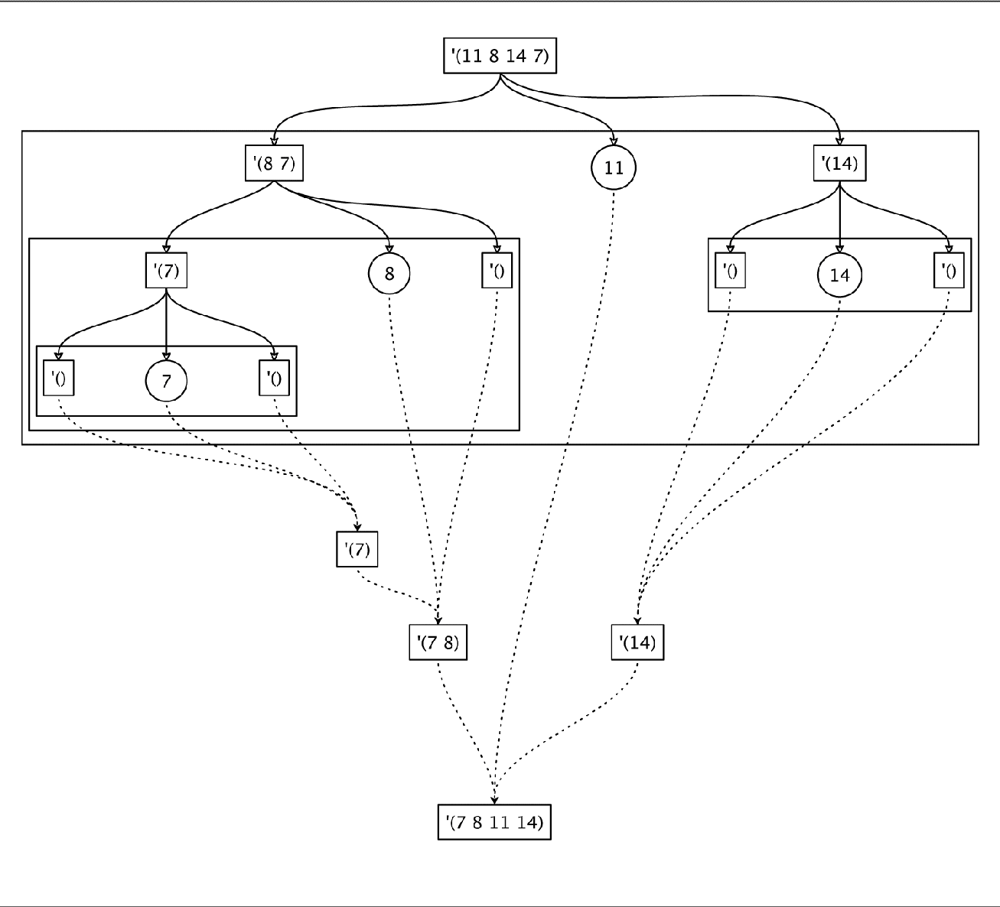
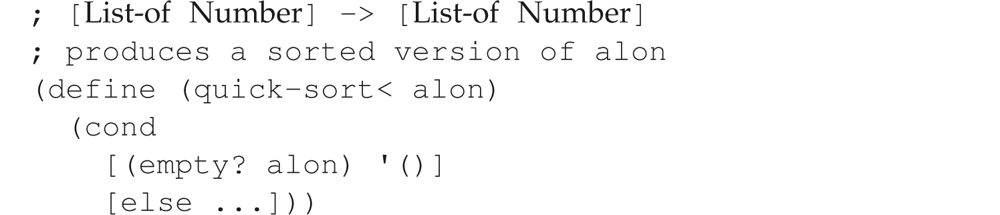
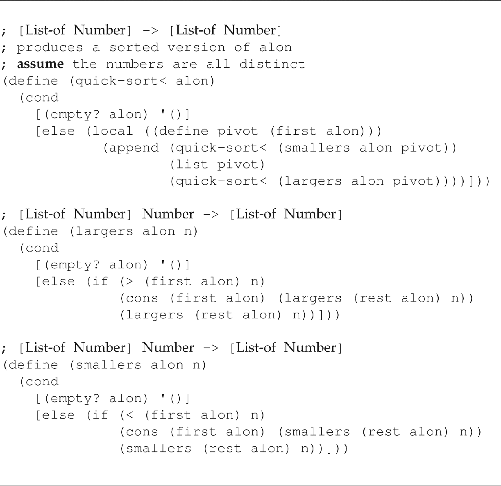
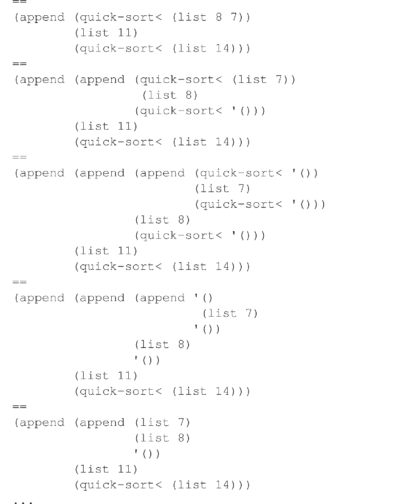

25.2 Recursion that Ignores Structure
Recall that the sort> function from chapter 11 consumes a list of numbers and rearranges it in some order, typically ascending or descending. It proceeds by inserting the first number into the appropriate position of the sorted rest of the list. Put differently, it is a structurally recursive function that reprocesses the result of the natural recursions.
Hoare’s quick-sort algorithm goes about sorting lists in a radically different manner and has become the classic example of generative recursion. The underlying generative step uses the time-honored strategy of divide-and-conquer. That is, it divides the nontrivial instances of the problem into two smaller, related problems; solves those smaller problems; and combines their solutions into a solution for the original problem. In the case of the quick-sort algorithm, the intermediate goal is to divide the list of numbers into two lists:
• one that contains all the numbers that are strictly smaller than the first
• and another one with all those items that are strictly larger.
Then the two smaller lists are sorted via the quick-sort algorithm. Once the two lists are sorted, the results are composed with the first item placed in the middle. Owing to its special role, the first item on the list is called the pivot item.
To develop an understanding of how the quick-sort algorithm works, let’s walk through an example, quick-sorting (list 11 8 14 7). Figure 148 illustrates the process in a graphical way. The figure consists of a top half, the divide phase, and the bottom half, the conquer phase.

Figure 148: A graphical illustration of the quick-sort algorithm
The partition phase is represented with boxes and solid arrows. Three arrows emerge from each boxed list and go to a box with three pieces: the circled pivot element in the middle, to its left the boxed list of numbers smaller than the pivot, and to its right the boxed list of those numbers that are larger than the pivot. Each of these steps isolates at least one number as the pivot, meaning the two neighboring lists are shorter than the given list. Consequently, the overall process terminates too.
Consider the first step where the input is (list 11 8 14 7). The pivot item is 11. Partitioning the list into items larger and smaller than 11 produces (list 8 7) and (list 14). The remaining steps of the partitioning phase work in an analogous way. Partitioning ends when all numbers have been isolated as pivot elements. At this point, you can already read off the final result by reading the pivots from left to right.
The conquering phase is represented with dashed arrows and boxed lists. Three arrows enter each result box: the middle one from a pivot, the left one from the boxed result of sorting the smaller numbers, and the right one from the boxed result of sorting the larger ones. Each step adds at least one number to the result list, the pivot, meaning the lists grow toward the bottom of the diagram. The box at the bottom is a sorted variant of the given list at the top.
Take a look at the left-most, upper-most conquer step. It combines the pivot 7 with two empty lists, resulting in '(7). The next one down corresponds to the partitioning step that isolated 8 and thus yields '(7 8). Each level in the conquering phase mirrors a corresponding level from the partitioning phase. After all, the overall process is recursive.
Exercise 424. Draw a quick-sort diagram like the one in figure 148 for (list 11 9 2 18 12 14 4 1). 
Now that we have a good understanding of the quick-sort idea, we can translate it into ISL+. Clearly, quick-sort< distinguishes two cases. If the input is '(), it produces '() because this list is sorted already; otherwise, it performs a generative recursion. This case split suggests the following cond expression:

The answer for the first case is given. For the second case, when quick-sort<’s input is a non-empty list, the algorithm uses the first item to partition the rest of the list into two sublists: a list with all items smaller than the pivot item and another one with those larger than the pivot item.
Since the rest of the list is of unknown size, we leave the task of partitioning the list to two auxiliary functions: smallers and largers. They process the list and filter out those items that are smaller and larger, respectively, than the pivot. Hence each auxiliary function accepts two arguments, namely, a list of numbers and a number. Designing these two functions is an exercise in structural recursion. Try on your own or read the definitions shown in figure 149.

Figure 149: The quick-sort algorithm
Each of these lists is sorted separately, using quick-sort<, which implies the use of recursion, specifically the following two expressions:
1. (quick-sort< (smallers alon pivot)), which sorts the list of items smaller than the pivot; and
2. (quick-sort< (largers alon pivot)), which sorts the list of items larger than the pivot.
Once quick-sort< has the sorted versions of the two lists, it must combine the two lists and the pivot in the proper order: first all those items smaller than pivot, then pivot, and finally all those that are larger. Since the first and last list are already sorted, quick-sort< can simply use append:
Figure 149 contains the full program; read it before proceeding.
Now that we have an actual function definition, we can evaluate the example from above by hand:
(quick-sort< (list 11 8 14 7))

The calculation shows the essential steps of the sorting process, that is, the partitioning steps, the recursive sorting steps, and the concatenation of the three parts. From this calculation, it is easy to see how quick-sort< implements the process illustrated in figure 148.
Both figure 148 and the calculation also show how quick-sort< completely ignores the structure of the given list. The first recursion works on two distant numbers from the originally given list and the second one on the list’s third item. These recursions aren’t random, but they are certainly not relying on the structure of the data definition.
Contrast quick-sort<’s organization with that of the sort> function from chapter 11. The design of the latter follows the structural design recipe, yielding a program that processes a list item by item. By splitting the list, quick-sort< can speed up the process of sorting the list, though at the cost of not using plain first and rest.
Exercise 425. Articulate purpose statements for smallers and largers in figure 149.
Exercise 426. Complete the hand-evaluation from above. A close inspection of the evaluation suggests an additional trivial case for quick-sort<. Every time quick-sort< consumes a list of one item, it returns it as is. After all, the sorted version of a list of one item is the list itself.
Modify quick-sort< to take advantage of this observation. Evaluate the example again. How many steps does the revised algorithm save?
Exercise 427. While quick-sort< quickly reduces the size of the problem in many cases, it is inappropriately slow for small problems. Hence people use quick-sort< to reduce the size of the problem and switch to a different sort function when the list is small enough.
Develop a version of quick-sort< that uses sort< (an appropriately adapted variant of sort> from chapter 11.3) if the length of the input is below some threshold.
Exercise 428. If the input to quick-sort< contains the same number several times, the algorithm returns a list that is strictly shorter than the input. Why? Fix the problem so that the output is as long as the input.
Exercise 429. Use filter to define smallers and largers.
Exercise 430. Develop a variant of quick-sort< that uses only one comparison function, say, <. Its partitioning step divides the given list alon into a list that contains the items of alon smaller than the pivot and another one with those that are not smaller.
Use local to package up the program as a single function. Abstract this function so that it consumes a list and a comparison function.